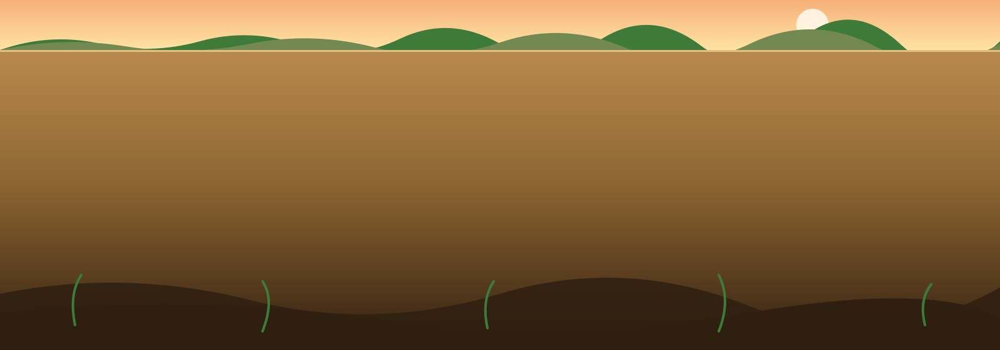
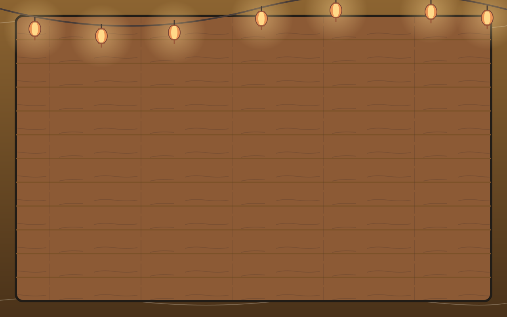
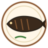
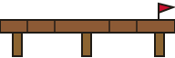
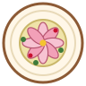
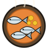
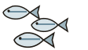

Asset Quán Ăn Chợ Nổi

bg_gather
bg_quanbong_dien_dien
64×64bong_sung
64×64bubble
32×32ca_linh
48×24 ca_loc
ca_loc
96×48
ca_loc_nuong_trui
96×96catch_ring
64×64customer_topdown
64×64
dock
192×64
goi_bong_sung
96×96icon_basket
32×32icon_clock
32×32icon_hand
32×32icon_heart
32×32icon_money
32×32icon_oxygen
32×32icon_patience
32×32icon_star
32×32
lau_ca_linh_dien_dien
96×96node_bong_dien_dien
80×80node_bong_sung
80×80node_regrowing
80×80
school_ca_linh
112×64school_ca_loc
96×48stove_cooking
96×96stove_idle
96×96stove_ready
96×96table_T1
128×128ut_sen_side
96×96ut_sen_topdown
64×64